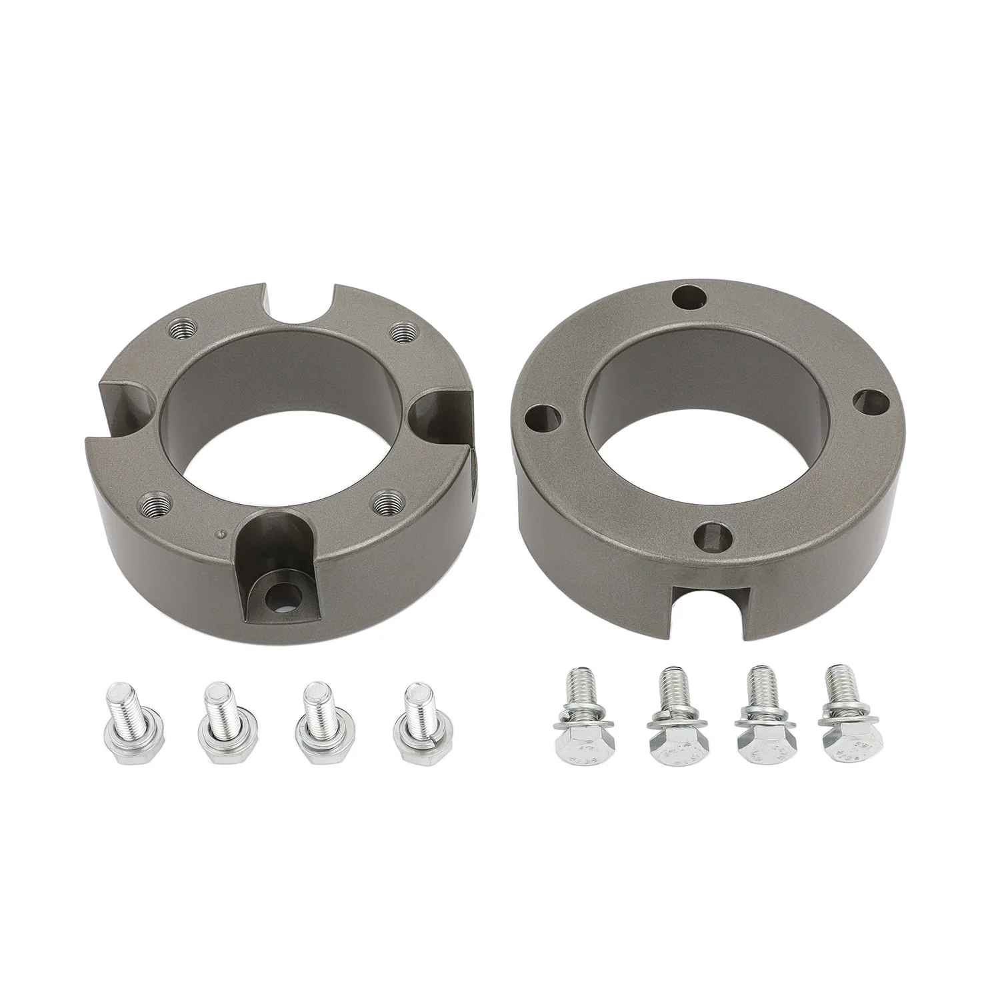

1 / 9Share FAPO Front 3" Leveling Lift Strut Spacers Do Toyota Tundra 2007-2021
Charakterystyka przedmiotu: Stan: nowy Marka: FAPO Gwarancja producenta: 1 rok Numer części producenta: FR073010 Umieszczenie na pojeździe: przód, lewo, prawo, góra Typ części: Zestaw podnoszenia zawieszenia Wysokość podnoszenia: 3 cala z przodu Górne mocowanie: M10*1,5 Dolne mocowanie: M14*1,5 Górne połączenie: Rama Dolne połączenie: Rozpórka Średnica: 5,43 cala Grubość: 1,81" Dołączony sprzęt: Elementy montażowe T…
Item Specifics: Condition: New Brand: FAPO Manufacturer Warranty: 1 Year Manufacturer Part Number: FR073010 Placement on Vehicle: Front, Left, Right, Upper Part Type: Suspension Lift Kit Lift Height: 3" Front Upper Mounting: M10*1.5 Lower Mounting: M14*1.5 Upper Connect: Frame Lower Connect: Strut Diameter: 5.43" Thickness: 1.81" Included Hardware: Mounting Hardware Fitment Type: Performance/Custom Performance Part: Yes Adjustable: No UPC: Does not apply Interchange Part Number: 3" Inches Lifted Leveling Lift Kits OE/OEM Part Number: Off-Road Loaded Suspension Shocks Absorbers Coilovers Spacers Superseded Part Number: Front Pair Driver and Passenger Side Left Right FL FR Hand Warning: Warning: This product contains a chemical known to the State of California to cause cancer, birth defects, or other reproductive harm.
279 PLN
Opis produktu
Charakterystyka przedmiotu:
- Stan: nowy
- Marka: FAPO
- Gwarancja producenta: 1 rok
- Numer części producenta: FR073010
- Umieszczenie na pojeździe: przód, lewo, prawo, góra
- Typ części: Zestaw podnoszenia zawieszenia
- Wysokość podnoszenia: 3 cala z przodu
- Górne mocowanie: M10*1,5
- Dolne mocowanie: M14*1,5
- Górne połączenie: Rama
- Dolne połączenie: Rozpórka
- Średnica: 5,43 cala
- Grubość: 1,81"
- Dołączony sprzęt: Elementy montażowe
- Typ dopasowania: Wydajność/Niestandardowe
- Część wydajnościowa: tak
- Regulowany: Nie
- UPC: Nie dotyczy
- Numer części Interchange: 3-calowe zestawy podnoszenia z podniesionym poziomem
- Numer części OE/OEM: Zawieszenie terenowe Amortyzatory Amortyzatory kolumny gwintowane dystansowe
- Zastąpiony numer części: para przednia, strona kierowcy i pasażera, lewa, prawa, FL FR, ręczna
Ostrzeżenie:
- Ostrzeżenie: Ten produkt zawiera substancję chemiczną, o której w stanie Kalifornia wiadomo, że powoduje raka, wady wrodzone lub inne zaburzenia reprodukcji.
Item Specifics:
- Condition: New
- Brand: FAPO
- Manufacturer Warranty: 1 Year
- Manufacturer Part Number: FR073010
- Placement on Vehicle: Front, Left, Right, Upper
- Part Type: Suspension Lift Kit
- Lift Height: 3" Front
- Upper Mounting: M10*1.5
- Lower Mounting: M14*1.5
- Upper Connect: Frame
- Lower Connect: Strut
- Diameter: 5.43"
- Thickness: 1.81"
- Included Hardware: Mounting Hardware
- Fitment Type: Performance/Custom
- Performance Part: Yes
- Adjustable: No
- UPC: Does not apply
- Interchange Part Number: 3" Inches Lifted Leveling Lift Kits
- OE/OEM Part Number: Off-Road Loaded Suspension Shocks Absorbers Coilovers Spacers
- Superseded Part Number: Front Pair Driver and Passenger Side Left Right FL FR Hand
Warning:
- Warning: This product contains a chemical known to the State of California to cause cancer, birth defects, or other reproductive harm.
FAPO Polska
Ten produkt obsługujemy lokalnie
Autoryzowana obsługa
FAPO Polska prowadzi katalog, kontakt i zamówienia bez odsyłania klienta do zewnętrznych sklepów.
Dobór po aucie
Sprawdzamy dopasowanie produktu do pojazdu, rocznika i wersji przed finalizacją zamówienia.
Wsparcie po zakupie
Masz kontakt w Polsce w sprawach zamówień, wysyłki, gwarancji i zwrotów.